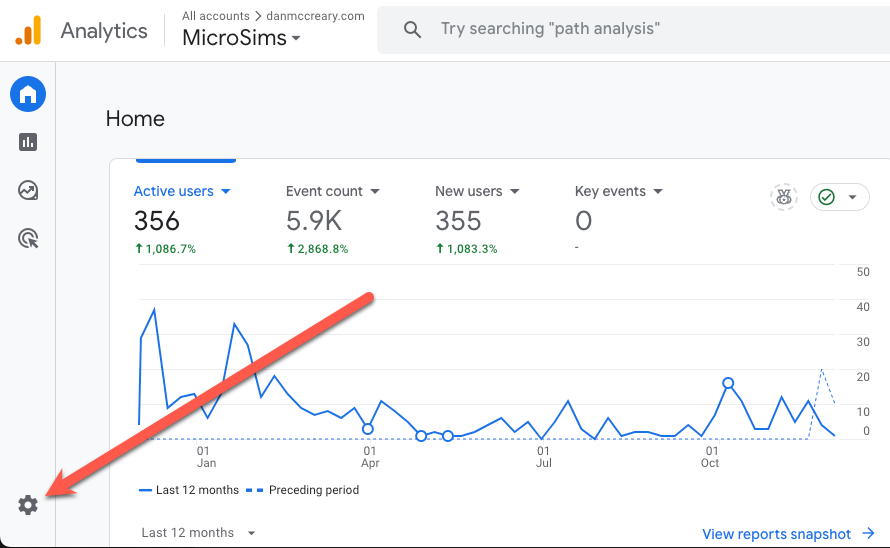
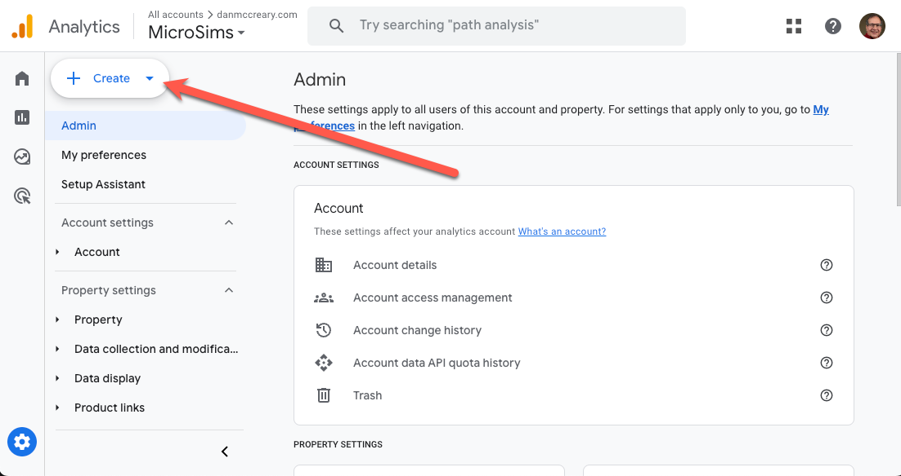
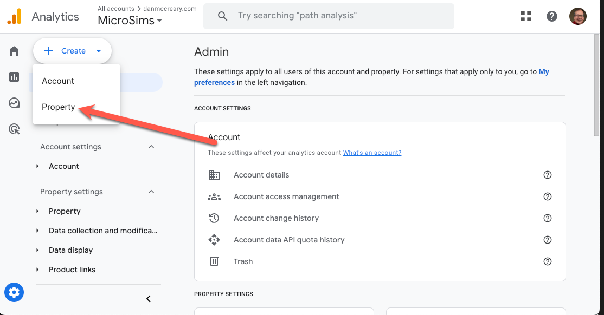
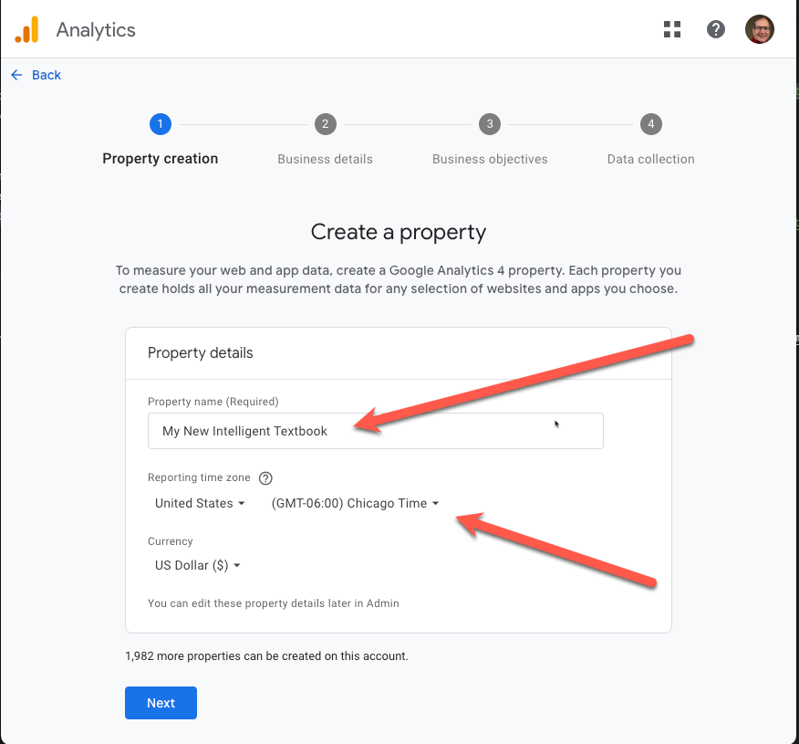
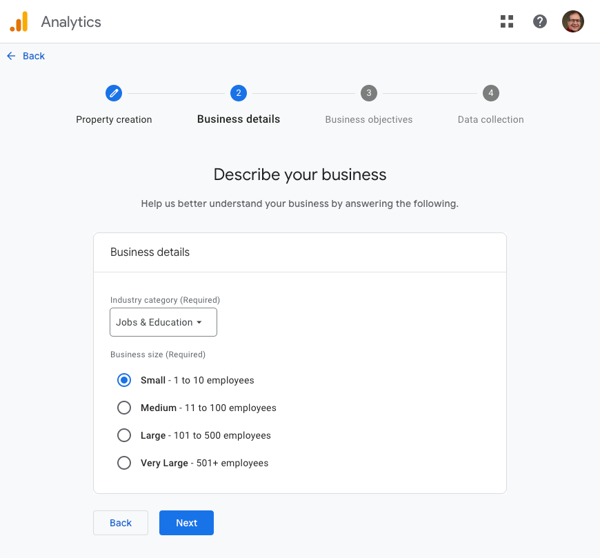
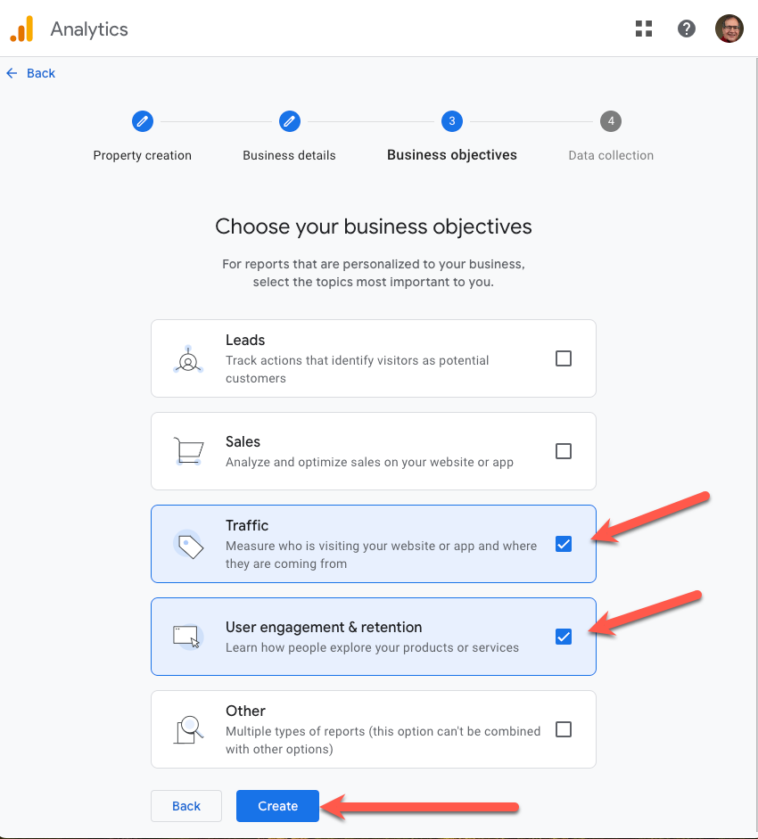
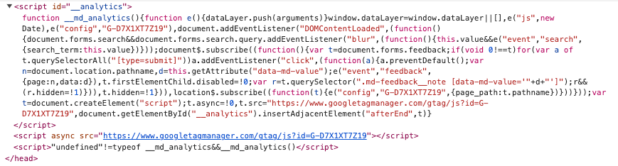
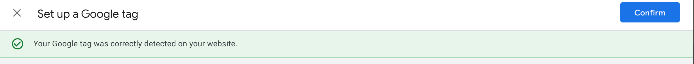
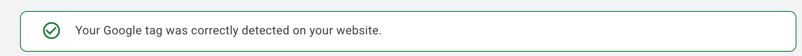

Configuring Google Analytics
In the mkdocs.yml template file you will find the following lines:
#extra:
# analytics:
# provider: google
# property: G-XXXX
You will need to first generate a Google Analytics property ID and then remove the comment lines "#".
extra:
analytics:
provider: google
property: G-XXXX
Google Analytics Step By Step
For this step, you will need a Google Analytics account. Once you have that go to the Google Analytics developer site to create a new property:
https://developers.google.com/analytics
Step 1 - Find the Configure Icon

Step 2 - Find the Create Button

Step 3 - Select Property

Step 4 - Name Your Property
And give it a timezone

Step 5 - Describe Your Business

Step 6 - Choose Your Business Objective

Step 7 - Find Your Google Analytics Measurement ID
Step 8 - Copy the Google Analytics Measurement ID into Your Mkdocs.yml and Check Your ID
After you do your next deploy with mkdocs gh-deploy, check that the tag in the
Use the Chrome Developer Tool to verify that the Google Analytics Script is Being Loaded

Step 9 - Check Your ID
Google Analytics has a way to check that the website had the correct ID in it.

You will see the following text if the tags are found:
